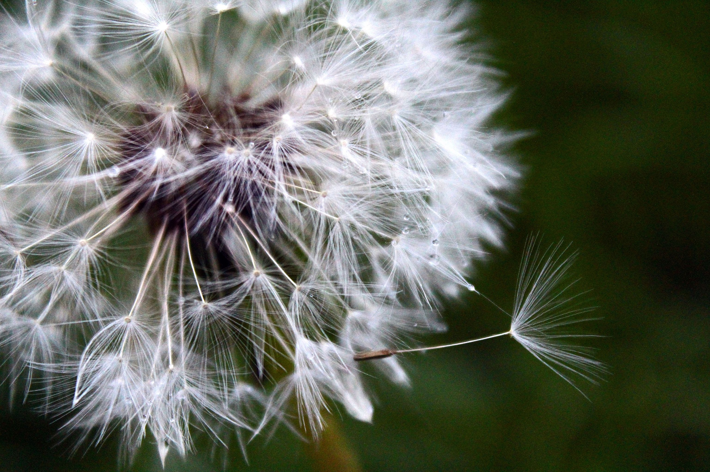
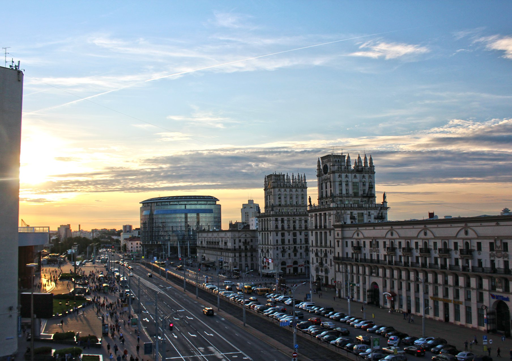
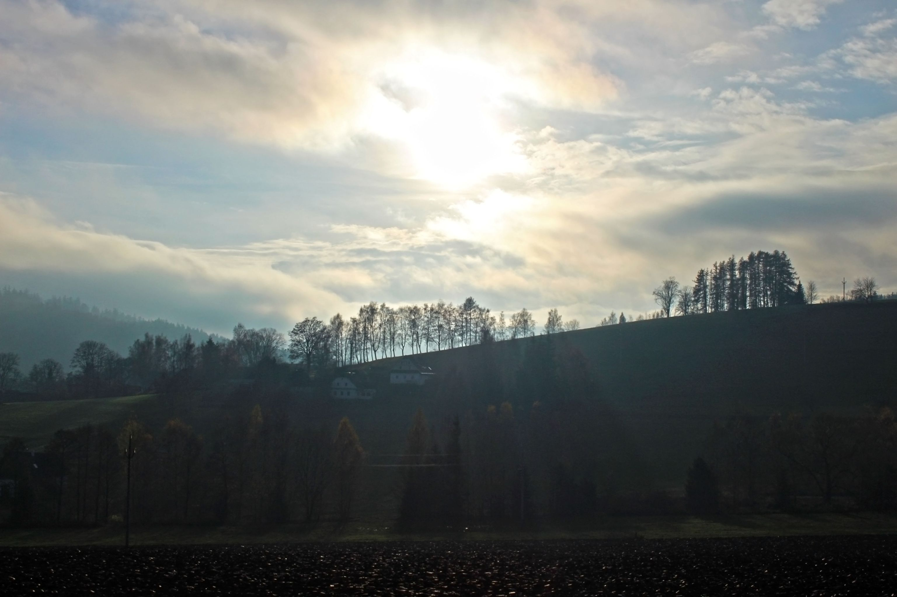

Jméno a přijímení: Darya Zhurauliova
Titul: Ing.
Datum narození: 10.10.1997
Adresa: Adresa v Brně
E-mail: dzhurauliova@gmail.com
Telefonní číslo: +420 777 583 990
LinkedIn:Darya Zhurauliova
Jmenuji se Darya, ale všichni mi říkají Dášo. Momentálně jsem studentkou 2. ročníku doktorského studia oboru Biofyzikální chemie na Fakultě chemické VUT v Brně. Zájem o vědu mi provazel od 3. ročníku bakalářského studia a snila jsem o práci ve výzkumu, protože pro mě je principem věnovat se v životě tomu, co baví a co přináší radost
Bohužel, nízké doktorské stipendium, podceňování studentů, toxické mezilidské vztahy a celkově doktorské studium přestává naplňovat mé očekávání. A tak díky czechitas začala moje cesta ve světě IT.
Na jaře roku 2023 jsem absolvovala semistrální kurz Python, v němž ovládám základy včetně datové analýzy. Během létní stáže na Ústavu přístrojové techniky AV ČR vedoucí mé stáže projevil zájem o rozšiření své skupiny, kam by chtěl někoho, kdo umí s JavaScript, React a HTML/CSS. Na podzimu po absolvování semistrálního kurzu JavaScript1 a Úvodu do HTML/CSS jsem pochopila, že je to ono, i přes určité komplikace to byla Láska na první pohled. A tím moje cesta nekončí...
2/2024 - 5/2024 | Staň se kodérkou
1/2024 - 4/2024 | React 1 - Základy
1/2024 - 3/2024 | UX
9/2023 - 12/2023 | JavaScript1
3/2023 - 6/2023 | Python
2/2023 - 5/2023 | Základy datové analytiky
Programovací jazyky: Python, SQL, JavaScript, HTML/CSS
Frameworks: React
Developer Tools: Git, Visual Studio Code, Miro
Ostatní: COMSOL Multiphysics, MS Office, ChemSketch
Angličtina - slovem i písmem, úroveň B1
Čeština - znalost na úrovni rodilého nebo dvojjazyčného mluvčího
Ruština - znalost na úrovni rodilého nebo dvojjazyčného mluvčího
Běloruština - znalost na úrovni rodilého nebo dvojjazyčného mluvčího
ZHURAULIOVA, D.; PEKAŘ, M. Modelling the Controlled Release of Substances through a Polymer Membrane in a Biological Environment. Studentská odborná konference Chemie je život 2023 Sborník abstraktů. Purkyňova 464/118, 612 00 Brno, Česká republika: Vysoké učení technické v Brně, Fakulta chemická, 2023. ISBN: 978-80-214-6204-5.
ZHURAULIOVA, D.; PEKAŘ, M. Release of the Model Substance Through the Polymer Membrane into the Biological Environment. Papers and Presentations from the COMSOL Conference 2023. Mnichov, Německo: COMSOL Conference 2023 Munich, 2023. ISBN: 978-1-7364524-1-7.
ZHURAULIOVA, D.; SMILEK, J.; PEKAŘ, M. Structural and Transport Properties of Hybrid Hydrogel Based on Sodium Alginate and Polyvinyl Alcohol. Studentská odborná konference Chemie je život 2022 Sborník abstraktů. Brno, CZ: Vysoké učení technické v Brně, Fakulta chemická, 2022. ISBN: 978-80-214-6117-8.
Většinu svého volného času ráda travím venku a nejlépe v přírodě a s fotoaparátem. Kdykoliv můžu, vyrazím někem do přírody nebo do města. Díky fotografiím se mohu kdykoliv připomenout všechny úžasná místa, kde jsem byla. Zde je menší výběr fotografií.
  